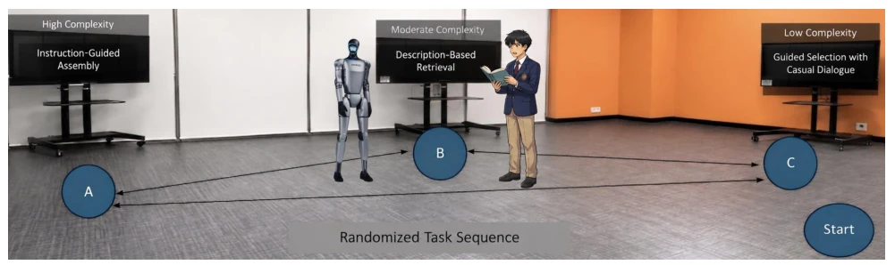
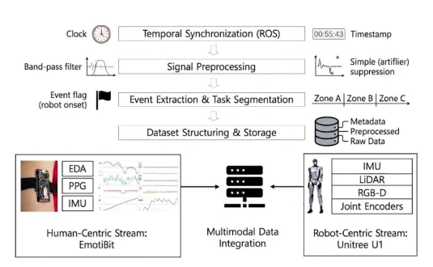
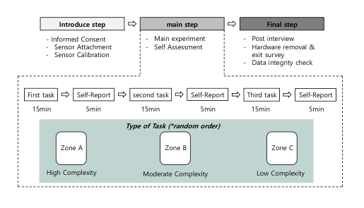

This paper is less about contributing new technology and more about "drawing a pie". The authors propose an experimental scheme for constructing a multimodal HRI dataset, attempting to integrate physiological signals, behavioral data, and robot kinematics. The highlight lies in considering task complexity grading and the synchronization of physiological signals (EDA/PPG), which is more reliable than relying solely on visual analysis. However, the drawbacks are obvious: this is a "design paper," data collection is not yet complete, and large-scale data collection is only mentioned in future work. For researchers urgently needing to validate algorithms, this resembles more of a "to-do list" than a "showcase of achievements." However, against the backdrop of the lack of high-quality multimodal benchmarks in the HRI field, this detailed protocol design indeed paves the way for subsequent research, though one should not expect to use it to train models at present.
研究动机Motivation
现有 HRI 研究多依赖可观察的行为线索（如 gaze, facial expressions）来分析用户参与度，如 UE-HRI 和 Kompatsiari et al. (2018) 的工作。虽然部分数据集（如 MHHRI）引入了生理信号，但往往缺乏与机器人运动学的精细同步。Anzalone et al. (2015) 和 Sorrentino et al. (2021) 指出整合生理、行为和主观指标能提高评估鲁棒性。然而，现有框架在任务复杂度控制与多模态对齐上存在不足，难以捕捉协作任务中的动态交互状态。本文旨在解决这一问题，通过结构化协议整合生理信号（EDA, PPG）与机器人运动数据，为 engagement 分析提供更全面的基准。
Existing HRI research mostly relies on observable behavioral cues (such as gaze, facial expressions) to analyze user engagement, such as the work of UE-HRI and Kompatsiari et al. (2018). Although some datasets (such as MHHRI) introduce physiological signals, they often lack fine synchronization with robot kinematics. Anzalone et al. (2015) and Sorrentino et al. (2021) point out that integrating physiological, behavioral, and subjective indicators can improve evaluation robustness. However, existing frameworks have deficiencies in task complexity control and multimodal alignment, making it difficult to capture dynamic interaction states in collaborative tasks. This paper aims to address this issue by integrating physiological signals (EDA, PPG) with robot motion data through a structured protocol, providing a more comprehensive benchmark for engagement analysis.
The overall process is divided into three stages: experimental protocol design, data collection, and multimodal alignment. First, collaborative task scenarios (Zone A/B/C) containing three complexity levels (high, medium, low) are designed, adopting a within-subject design with randomized order to eliminate order effects. Data collection adopts a dual-stream architecture: the Human-Centric stream records EDA, PPG, and IMU via EmotiBit; the Robot-Centric stream records joint encoders, IMU, LiDAR, and RGB-D. The core innovation lies in a unified timestamp synchronization framework based on ROS2, ensuring heterogeneous signals (physiological, motion, visual) are aligned on the time axis, solving the multimodal data alignment challenge. Preprocessing stages include physiological signal filtering, IMU gravity compensation, and joint angle conversion, ensuring data comparability. In addition, a 15-item Likert scale questionnaire is introduced as subjective ground-truth, bound with objective sensor data to form a complete annotation system. The system structure is divided into two synchronized streams, Robot-centric and Human-centric, implementing a unified logging framework through ROS2, supporting real-time data collection and subsequent analysis, providing a structured foundation for engagement modeling.

Fig. 2. Overview of the system structure.

Fig. 3. Overview of the multimodal data processing frame- work. Human- and robot-side IMU data are planned to be pro- cessed through gravity compensation, coordinate normal- ization, and unit standardization to ensure comparability across motion streams. Joint encoder readings are designed to be converted into angular velocity profiles, and velocity- based thresholding is intended to extract robot motion onset timestamps for structured segmentation.
This paper has not yet provided experimental results; the main contribution lies in the experimental design itself. It plans to recruit 30 participants, using G*Power [Faul et al., 2007] for power analysis to determine the sample size, ensuring statistical power. The experiment includes three task areas (Zone A/B/C), with randomized order to eliminate order effects, simulating a real tour guide scenario. Evaluation metrics include physiological signals (EDA, PPG), kinematic data, and subjective questionnaires (15-item Likert scale). Currently in the protocol design phase, future work will focus on actual data collection and multimodal modeling analysis. Although lacking empirical results, this design clarifies data collection standards and synchronization mechanisms, providing a potential data foundation for subsequent engagement modeling, rather than directly providing algorithm performance improvement. The dataset will contain raw and preprocessed data, supporting future research replication and comparison, filling the gap of structured multimodal benchmarks in the HRI field.

Fig. 1. Experimental procedure structured into introduc- tion, main tasks across randomized zones, and final data integrity check.